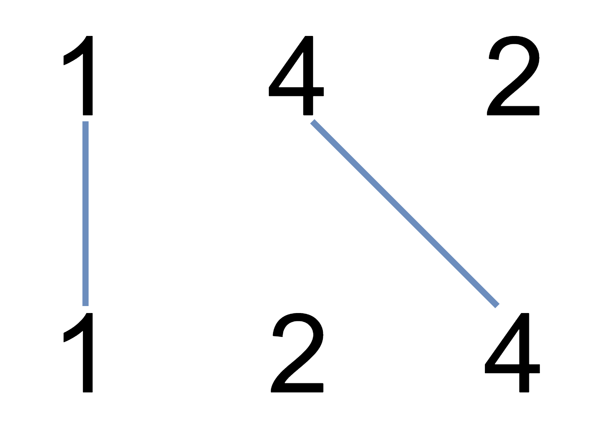

1035. 不相交的线
不相交的连线恰好对应两数组的公共子序列，答案就是 LCS 长度，套最长公共子序列 DP。
思路
- 连线不相交 ⇔ 选出的数字在两个数组里都保持相对顺序 ⇔ 公共子序列，所以求 LCS 长度即可。
dp[i][j]：nums1前i个与nums2前j个的 LCS 长度；相等时dp = 左上 + 1，否则继承上、左中较大者。- 用滚动数组压到一维：
prev暂存左上角dp[i-1][j-1]，进列前先记下将被覆盖的dp[i-1][j]。 - 只需返回长度（题目不要连线方案），
dp[m]即答案。
图解
最优解
1class Solution {2 public int maxUncrossedLines(int[] nums1, int[] nums2) {3 // 不相交连线 ⇔ 公共子序列：答案是 LCS 长度4 int n = nums1.length, m = nums2.length;5 int[] dp = new int[m + 1]; // 滚动数组：dp[j] = dp[i][j]6 for (int i = 1; i <= n; i++) {7 int prev = 0; // 左上角 dp[i-1][j-1]8 for (int j = 1; j <= m; j++) {9 int tmp = dp[j]; // 记下 dp[i-1][j]，它是下一列的左上角10 if (nums1[i - 1] == nums2[j - 1]) dp[j] = prev + 1;11 else dp[j] = Math.max(dp[j], dp[j - 1]);12 prev = tmp;13 }14 }15 return dp[m];16 }17}题目
在两条独立的水平线上按给定的顺序写下 nums1 和 nums2 中的整数。
现在，可以绘制一些连接两个数字 nums1[i] 和 nums2[j] 的直线，这些直线需要同时满足：
-
nums1[i] == nums2[j] - 且绘制的直线不与任何其他连线（非水平线）相交。
请注意，连线即使在端点也不能相交：每个数字只能属于一条连线。
以这种方法绘制线条，并返回可以绘制的最大连线数。
示例 1：

输入：nums1 = [1,4,2], nums2 = [1,2,4] 输出：2 解释：可以画出两条不交叉的线，如上图所示。 但无法画出第三条不相交的直线，因为从 nums1[1]=4 到 nums2[2]=4 的直线将与从 nums1[2]=2 到 nums2[1]=2 的直线相交。
示例 2：
输入：nums1 = [2,5,1,2,5], nums2 = [10,5,2,1,5,2] 输出：3
示例 3：
输入：nums1 = [1,3,7,1,7,5], nums2 = [1,9,2,5,1] 输出：2
提示：
1 <= nums1.length, nums2.length <= 5001 <= nums1[i], nums2[j] <= 2000
题面取自力扣当前版本。
数据快照 2026-11-04。题面版权归力扣所有，本站点仅供本人学习使用，请勿对外发布。